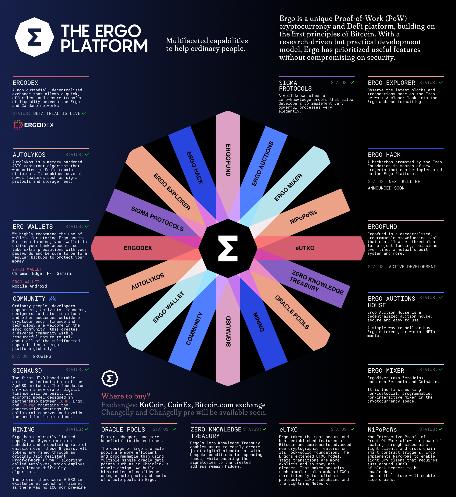

The Ergo Protocol

Ergo is a Resilient Platform for Contractual Money. Designed with the main focus to provide an efficient, secure, and easy way to implement financial contracts.
Ergo builds advanced cryptographic features and radically new DeFi functionality on the rock-solid foundations laid by a decade of blockchain theory and development. It complements tried and tested principles with the latest peer-reviewed academic research into cryptography, consensus models, and digital currencies.
With a research-driven but practical development model, Ergo has prioritized useful features without compromising on security.
Extended support of light nodes makes Ergo friendly for end-users, allowing them to run contracts on common devices such as mobile phones without centralized intermediaries. To be useful in the long-term, we use widely-researched solutions with high-security guarantees while also preventing performance degradation over time with a new economic model.
All cryptocurrencies rely on contributions from the scientific research community. Ergo brings it in its core!
The Manifesto
Cryptocurrency should provide tools to enrich ordinary people. The small businesses that are getting not much above making ends meet, not depersonalized big financial capital. This is what inspired me. This is my dream.
Proof-of-Work
Ergo uses Autolykos as the underlying PoW algorithm. Autolykos v2 (the current version of PoW) is a memory-hard ASIC-resistant PoW algorithm oriented towards GPUs.
eUTXO
The platform's smart contracts are built on the extended UTXO (eUTXO) model with a unique data input concept, offering a radically different approach to provide robust, flexible cryptography and easy, safe scripting on privacy-centric Sigma Protocols (non-interactive zero-knowledge proofs).
Ergo is a UTXO based blockchain with Proof-of-Work consensus. In this aspect, it is similar to Bitcoin. Ergo uses standard Elliptic Curve Cryptography with the same curve as Bitcoin (Secp256k1). Unlike Bitcoin and similar to Cardano, Ergo uses a so-called "extended-UTXO model," which implies UTXOs with the ability to contain arbitrary data and sophisticated scripts.
Due to this, Ergo supports advanced financial contracts similar to those in Ethereum's account-based model.
ErgoScript
Ergo provides advanced programming abilities for financial contracts using a high-level language called ErgoScript. As a simple example, the below script allows only Alice to spend a box before a certain height and only Bob to spend the box after that.
if (HEIGHT < 100000) alicePubKey else bobPubKey
The scripting language in itself is non-Turing complete, but applications run on the platform can be made to be Turing complete as demonstrated in this peer-reviewed paper.
Sigma Protocols
The cryptographic part of ErgoScript is based on Sigma Protocols and naturally supports threshold m-of-n signatures, ring signatures, and more. Keeping all this in mind, we expect ErgoScript and Ergo's design to be uniquely useful as Contractual Money with countless possible applications.
NIPoPoWs
Non-Interactive Proofs of Proof of Work (NIPoPoWs) are essential for two reasons: Light Clients and Side Chains. These two components are essential for clients and nodes to facilitate easier onboarding to the blockchain. A decentralized network is inherently inefficient because of the randomness mechanism in a synchronous network; that is to say, every time a transaction (TX) occurs on the network, a couple of random nodes must process the TX to prove and secure its reliability. When put into perspective, that is an enormous task on a global scale. There can be billions of transactions, and it is plausible that many of those are from contributors operating with low bandwidth.
Storage Rent
Another unique feature of Ergo is the concept of storage-rent, which is the ability of miners to take out a small amount of Ergs from boxes that have remained unspent for four or more years (the box is spent, and a new box is created with the lower value). This allows Ergo to avoid long-term bloat of the UTXO set.